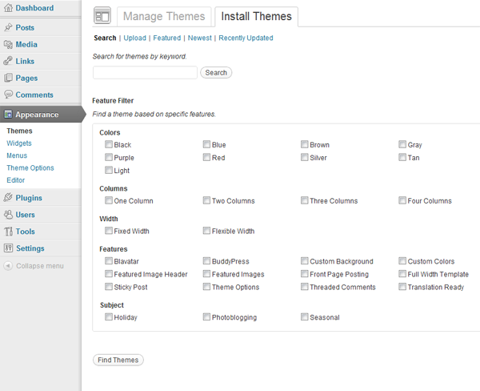
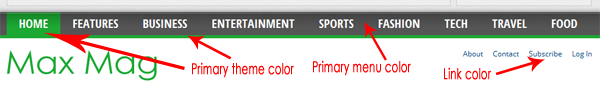
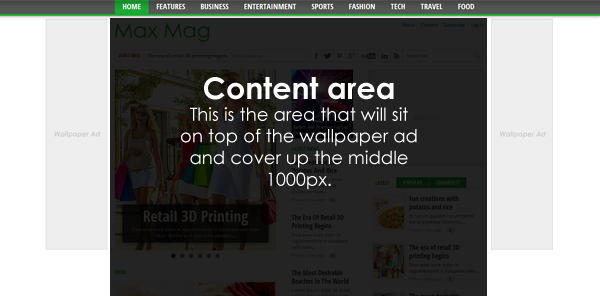
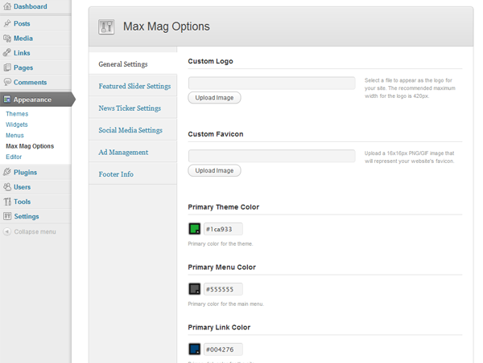
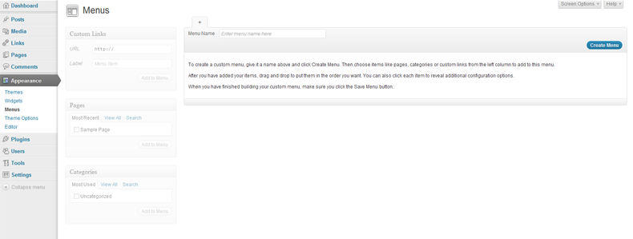
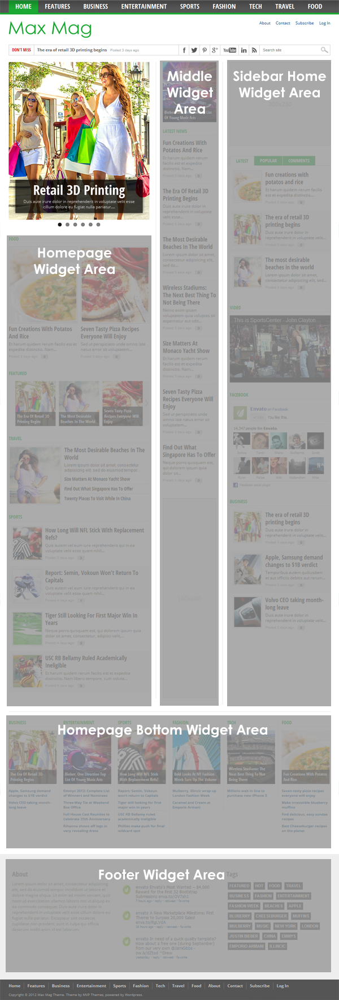
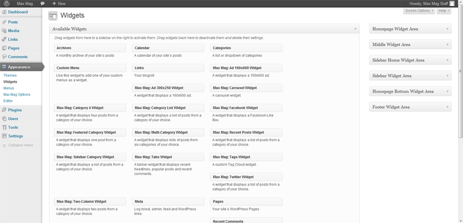
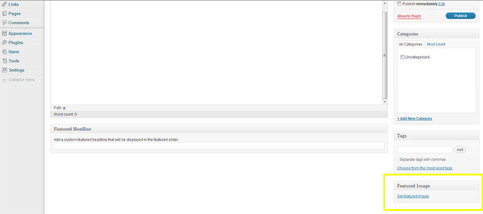

“Max Mag” Documentation by “MVP Themes” v2.5.1
“Max Mag”
Thank you for purchasing my theme. If you have any questions that are beyond the scope of this help file, please feel free to visit the MVP Themes Support Center here. Thanks so much!
Table of Contents
Disclaimer - top
Although support is not required of ThemeForest authors, I do offer support for the theme and its core features and functionality. I cannot guarantee that this theme will function with all third-party components and plugins. Max Mag Theme is presented as is.
Installation - top
- Make sure that you have the latest version of Wordpress installed.
- You can upload Max Mag to Wordpress in one of two different ways:
- Extract the maxmag.zip and upload the extracted maxmag folder to the /wp-content/themes/ directory on your server.
- OR go to Appearance > Themes and click on the Install Themes tab at the top. Then click Upload and select maxmag.zip and click Install Now.
- After you upload the theme, activate it by going to Appearance > Themes and click Activate underneath the Max Mag screenshot.

Updating the Theme - top
From time to time, a theme update will be released that either fixes a bug and/or adds new features to the theme. You can update the theme in one of two ways:
- Remove the old version of the theme by going to Appearance > Themes and activating another theme (you may want to place your site in Maintenance mode via a plugin). Then, click delete under Max Mag theme to delete the old version of the theme. Then, follow the installation instructions above to install the new version of the theme.
- OR you can upload the new /maxmag folder (located in the maxmag.zip file) via FTP and overwrite the old files.
NOTE: Updating the theme will overwrite any changes you made to any of the core files (index.php, style.css, header.php, etc), however, you will not lose any changes you made to the Theme Options, menus, widgets, etc.
Also, make sure to go to your Theme Options and click "Save all changes" after each time you update the theme to make sure any new options are generated properly.
Theme Options - top
Max Mag comes with custom Theme Options to allow you to set up many of the theme features without touching the code. To edit the Theme Options, go to Appearance > Max Mag Options.
- General Settings - Here, you will be able to upload a custom logo, a custom favicon, set the color scheme for your site and enter the custom tracking code for analytics (such as Google Analytics or StatCounter). NOTE: Please click "Save All Changes" in the General Settings section once before you begin in order to register the default colors.
- Custom Logo - Upload an image to serve as your logo. The recommended dimensions for the logo are 300 x 40px. The recommended file types are transparent PNG or GIF files.
- Custom Favicon - Upload a 16px x 16px PNG or GIF file to serve as your favicon.
- Primary Theme Color - Select or enter a hexidecimal code for the primary color of the theme. This will affect the border below the main navigation as well as the highlighted menu item in the main navigation. It will also change the color of the section headings throughout the site.
- Primary Menu Color - Select or enter a hexidecimal code for the primary menu color for the background of the main navigation.
- Primary Link Color - Select or enter a hexidecimal code for the primary link color for the site. This will only affect unstyled links.
- Tracking Code - Place your Google Analytics (or any other tracking code) here. This will be added into the footer template of your theme.
- Toggle Responsiveness - Uncheck this box if you would like to remove responsive feature of the site that alters the site based on the device it is being viewed on. By disabling this, visitors will see the desktop version of the site no matter what device they are viewing.
- Show Featured Slider on Category Pages - Uncheck this box if you would like to remove the Featured Slider from the category pages.

- Featured Slider Settings - This is where you will be able to activate the featured slider that appears on the front page.
- Featured Slider Tag Slug - Select a tag slug from the dropdown menu to associate with the Featured Slider. Posts with this tag slug will show up on the homepage Featured Slider.
- Maximum Featured Slider Items - Set the maximum number of slides (posts) to appear in the featured slider.
- News Ticker Settings - Activate the news ticker that will appear in the section just below the logo.
- News Ticker Tag Slug - Select a tag slug from the dropdown menu to associate with the News Ticker. Posts with this tag slug will show up on the homepage featured slider.
- Maximum Slider Items - Set the maximum number of slides (posts) to appear in the News Ticker.
- Article Settings - Here you can decide whether to display a featured image and an author box on all posts.
- Show Featured Image? - Check this box if you would like to display a featured image thumb on all posts in the content area.
- Show Author Info? - Check this box if you would like to display an author info box on all posts below the content area.
- Social Media Options - Here you can enter usernames for several popular social media sites to activate links to each page that will appear in a section just below the logo. Simply enter the user name and the link will appear automatically!
- Ad Management - Enter ad code for the optional 728x90 banner, and/or a wallpaper ad.
- Leaderboard Ad Code - Enter your ad code for the 970x90 leaderboard ad area that will appear above the main navigation. You can also place a 728x90 ad in this area.
- Responsive Ad Area Below Article - Enter your ad code (Eg. Google Adsense) to activate the responsive ad area that will be displayed below the content of each article.
- Wallpaper Ad Image URL - Enter the URL for the wallpaper image (i.e. http://www.xyzdomain.com/xyz-wallpaper.jpg). Please do not insert the actual ad code for the wallpaper ad, just the image URL. The recommended width of the wallpaper ad is a minimum of 1280px. The recommended height is a minimum of 600px. NOTE: Due to the nature of wallpaper ads, the content of the site will sit on top of the ad and cover up the middle 1000px of the ad. The only visible area will the the left and right margins of the image which is why the ad should be wider than 1000px (recommended minimum 1280px).
- Wallpaper Ad Click-Through URL - Enter the URL that users will be taken to if they click on the Wallpaper Ad.

- Footer Options - Enter your information for the copyright text.
- Copyright Text - Here you can enter any text you want (eg. copyright text).

Max Mag supports three different custom menus: a Primary Menu, a Secondary Menu, and a Footer Menu.
To set up the menus, go to Appearance > Menus. Here, you can enter a name for your new menu in the Menu Name field and click the Create Menu button. You will then see a Theme Locations box appear to the left. Select your newly created menu from the dropdown list of the menu location you would like to set up and click Save. You are now able to create a custom link, page or category and add it to your new menu by clicking the Add to Menu button.
For more information on how to use the Wordpress custom menu feature, click here.

Max Mag comes with Menufication, a user-friendly, customizable WordPress-plugin to transform your WordPress menus to a responsive fly-out menu in Facebook fashion.
Here are the instructions to install and set up Menufication for Max Mag:
- Go to Plugins > Add New then click the Upload link at the top.
- Click Choose File and select the menufication.zip file (located in the /plugins folder of your original zip file you downloaded from Themeforest), then click Install Now.
- After the plugin installs, click the Activate Plugin link.
- Go to Settings > Menufication and make change the following settings to set up the plugin like the demo:
- Select your main menu from the Menu dropdown box.
- If you would like a logo in your menu header, in the Custom logo for the header box, click Upload image and you can either upload an image (under the Upload files tab) or select an existing image from your media gallery, and then click Select.
- If you uploaded a logo and would like to link the logo to your homepage, in the Use the header logo as a link... box, enter the URL of your homepage.
- In the Only create the menu when the browser width... box, enter 985.
- If you would like a search box in your slideout menu, check the checkbox next to Add a searchfield within the menu?
- Click Save
For the full list of features for the Menufication plugin, click here.
Max Mag comes with 15 custom widgets for use in six different widget areas: Homepage Widget Area, Middle Widget Area, Category Middle Widget Area, Sidebar Home Widget Area, Sidebar Widget Area, Homepage Bottom Widget Area and Footer Widget Area. To activate the widgets, go to Appearance > Widgets and click and drag a widget from the Available Widgets box and drop it into any of the six different custom widget areas..

Homepage Widget Area - The following widgets are designed to best display in the Homepage Widget Area:
- Max Mag: Two-Column - A widget that displays 2 posts from a category of your choice. Enter a title for this widget and select the category you would lke to use. You can also select "All Categories" to display posts from all categories. Posts from this category will appear in this widget.
- Max Mag: Carousel - A carousel widget that displays posts from a specifc tag. Enter a title for this widget, enter a maximum number of posts you would like to display and select a tag that you would like to use. You can also select "All Tags" to display posts from all tags. Posts with this tag will appear in this widget.
- Max Mag: Category 4 - A widget that displays 4 posts from a category of your choice. Enter a title for this widget and select the category you would lke to use. You can also select "All Categories" to display posts from all categories. Posts from this category will appear in this widget.
- Max Mag: Category List - A widget that displays posts from a category of your choice. Enter a title for this widget, select the number of posts to display and select the category you would lke to use. You can also select "All Categories" to display posts from all categories. Posts from this category will appear in this widget.
- Max Mag: Homepage Blog - A widget that displays your latest posts on the homepage in a blog layout complete with page navigation. Enter a title for this widget and click save. The number of posts displayed in this widget are controlled by the Blog pages to show at most function located in the Settings > Reading section of the Wordpress backend.
Middle Widget Area - The following widgets are designed to best display in the Middle Widget Area:
- Max Mag: Featured Category - A widget that displays one post from a category of your choice. Select the category you would lke to use. A post from this category will appear in this widget.
- Max Mag: Recent Posts - A widget that displays posts from a category of your choice. Enter a title for this widget, select the number of posts to display and select the category you would lke to use. You can also select "All Categories" to display posts from all categories. Posts from this category will appear in this widget.
- Max Mag: Category Latest News - A widget that is designed specifically for the category pages (in the Category Middle Widget Area) that will display the most recent posts in that category. Enter a title for this widget and select the number of posts to display.
- Max Mag: Ad 160x600 - A widget that displays a 160x600 ad. Enter your ad code and your ad will appear wherever you place this widget.
Sidebar Home Widget Area and Sidebar Home Widget Area - The Sidebar Home Widget Area will display only on the homepage whereas the Sidebar Widget Area will show on all other pages. The following widgets are designed to best display both the Sidebar Home Widget Area and the Sidebar Widget Area:
- Max Mag: Ad 300x250 - A widget that displays a 300x250 ad. Enter your ad code and your ad will appear wherever you place this widget.
- Max Mag: Tabs - A tabber widget that displays posts from a category of your choice, popular posts and recent comments. Enter a title for the first tab, select the number of posts to display and select the category you would lke to use. You can also select "All Categories" to display posts from all categories. Select the number of "popular" posts to display and then select the number of recent comments to display.
- Max Mag: Facebook - A widget that displays a Facebook Like Box. You can customize the title header, your Facebook page URL, and a few other options to help customize the Like Box to your liking.
- Max Mag: Sidebar Category - A widget that displays posts from a category of your choice. Enter a title for this widget, select the number of posts to display and select the category you would lke to use. You can also select "All Categories" to display posts from all categories. Posts from this category will appear in this widget.
Homepage Bottom Widget Area - The following widgets are designed to best display in the Homepage Bottom Widget Area:
- Max Mag: Multi-Category - A widget that displays lists of posts from six categories of your choice. Enter a title for each category and select the category you would like to use for each. You can also select "All Categories" to display posts from all categories.
Footer Widget Area - The following widgets are designed to best display in the Footer Widget Area:
- Max Mag: Tags - A widget that displays a custom tag cloud. Simply enter the title for this widget.

Images - top
Max Mag supports retina-ready images. To utilize this feature, follow these instructions:
- Create a second image that is twice the size of your existing image. For example, if your logo is 200x50, your retina image would need to be 400x100.
- Add @2x to the end of the name of the retina image. For example, if your logo is called logo.png, name your retina version logo@2x.png.
- Upload the retina image in the same directory as your non-retina image. For example, if your logo is located in /wp-content/themes/maxmag/images/, you must upload the retina version in this directory.
- That's it!
Max Mag utilizes Wordpress' built-in featured image feature to handle image management. The recommended size for images to show properly within posts and in the featured slider is 420x470px. It is not recommended that you place posts without images in the featured slider or carousel widget. To set the featured image for a post, go to Posts > Add New (or edit an existing post) and click the Upload/Insert icon above the main text box. From here, choose a file and upload it. Once it is uploaded, click Use as featured image located near the bottom of the Add Media window. Then click Save all changes, close the Add Media window and you're good to go! Max Mag will take care of the rest in generating the smaller thumbnails that show up in the various places around the site.

Background - top
Max Mag utilizes Wordpress' built-in Custom Backgrounds feature to set up your custom background color and/or image. For more information on how to set up your custom background, click here.
Post Options - top
Top News gives you a variety of custom options for your posts, inlcuding a custom Featured Headline feature and the ability to set a full-width posts.
- Video/Audio Posts - Max Mag allows you to replace the default Featured Image in posts with an embedded video or audio clip. To utlize this feature, go to Posts > Add New (or edit an existing post) and enter your embed code (HTML or Javascript) in the box titled Video/Audio Embed.
- Featured Headline - Max Mag allows you to enter a separate, smaller headline for use in the featured post areas on the homepage and category pages. To utlize this feature, go to Posts > Add New (or edit an existing post) and enter your featured headline in the box titled Featured Headline.
- Photo Credit - Max Mag allows you to enter a caption (which can also be used as a photo credit) for your Featured Images within posts. This will be displayed just below the featured image. To utlize this feature, go to Posts > Add New (or edit an existing post) and enter your photo credit in the box titled Photo Credit.
- Post Template - Select between the default post layout, or a full-width post layout that stretches the length of the content area without the sidebar. To utlize this feature, go to Posts > Add New (or edit an existing post) and select a layout from the dropdown box in the Post Template section on the right sidebar.
- Show/Hide Featured Image - Max Mag allows you to remove the featured image from individual posts. To utlize this feature, go to Posts > Add New (or edit an existing post) and select "Hide" from the dropdown box in the Featured Image Show/Hide section on the right sidebar.
Post/Page Slideshows (Theia Post Slider) - top
Max Mag utilizes Theia Post Slider to give you dynamic slideshows in your posts and pages. Here are the instructions to install and set up Theia Post Slider for Max Mag:
- Go to Plugins > Add New then click the Upload link at the top.
- Click Choose File and select the theia-post-slider.zip file (located in the /plugins folder of your original zip file you downloaded from Themeforest), then click Install Now.
- After the plugin installs, click the Activate Plugin link.
Theia post slider uses Wordpress' built-in "Page Break" feature to split up each slide in the slideshow. Simply click the "insert page break" shortcode button or manually insert
<!--nextpage--> to insert a page break, which will split your post into different pages/slides.
To customize Theia Post Slider to your liking, you can edit the slider settings by going to Settings > Theia Post Slider. Click here for the full documentation for Theia Post Slider.
Author Info - top
Max Mag allows you to display information about the author on each post.
- Author Description - You can enter an author description via the author's user profile in the Biographical Info section. This description will show up below each post if you have the Show Author Info? option enabled in the Max Mag Options.
- Author Avatar - Max Mag utilizes Gravatar to display the author's avatar in the author info below each post. Please sign up at Gravatar.com with the email address you are using with the author on your site. Once you have associated an avatar with this email, this avatar will appear in the author info as well as in the comments section of the site.
Translation Files - top
Max Mag comes translation-ready with .po/.mo files ready for translation. These files are located in the /languages folder of the main theme folder. Once you have translated the files, simply save them with the name of your language code (i.e. es_ES.po and es_ES.mo for Spanish) and place them back in the /languages folder.
For more information on how to utilize these files to translate this theme into another language, click here.
WooCommerce - top
Max Mag is fully compatible with the popular e-commerce plugin WooCommerce, which will allow you to create a store within your site. You can download WooCommerce here. Once you have downloaded the plugin, follow these instructions to install the plugin with Wordpress:
- Go to Plugins > Add New
- Select the Upload link at the top.
- Click Choose File and select the woocommerce.zip file that you downloaded, then click Install Now.
Once the plugin is activated, WooCommerce will need to install several pages in order for it to function properly. Click here for more information about setting up WooCommerce.
bbPress - top
Max Mag is fully compatible with the popular forum plugin bbPress, which will allow you to add a forum to your site. You can download bbPress here. Once you have downloaded the plugin, follow these instructions to install the plugin with Wordpress:
- Go to Plugins > Add New
- Select the Upload link at the top.
- Click Choose File and select the bbpress.xxx.zip file that you downloaded, then click Install Now.
Click here for more information about setting up bbPress.
CSS Files - top
- style.css - Main theme stylesheet
- /css/flexslider.css - Homepage Featured Slider
- /css/reset.css - The goal of a reset stylesheet is to reduce browser inconsistencies in things like default line heights, margins and font sizes of headings, and so on.
Javascript Files - top
- /js/jquery.elastislide.js - Homepage Carousel Widget
- /js/jquery.flexslider-min.js & jquery.flexslider.js - Homepage Featured Slider
- /js/jquery.tweet.js - Twitter widget
- /js/respond.min.js - Homepage Carousel Widget
- /js/retina.js - Retina functionality
- /js/scripts.js - Mobile navigation effects & Sidebar Tabs Widget
Support - top
If you have any questions related to setting up the theme that are not covered in this documentation or if you encounter any technical bugs, please submit a ticket at the MVP Theme Support Center. Please note that this theme is sold "as-is" and any additional custom modifications you would like to make to the theme are your responsibility.
Sources and Credits - top
I've used the following images, icons or other files as listed.
Once again, thank you so much for purchasing this theme. As I said at the beginning, I'd be glad to help you if you have any questions relating to this theme. No guarantees, but I'll do my best to assist. If you have a more general question relating to the themes on ThemeForest, you might consider visiting the forums and asking your question in the "Item Discussion" section.
MVP Themes
Go To Table of Contents